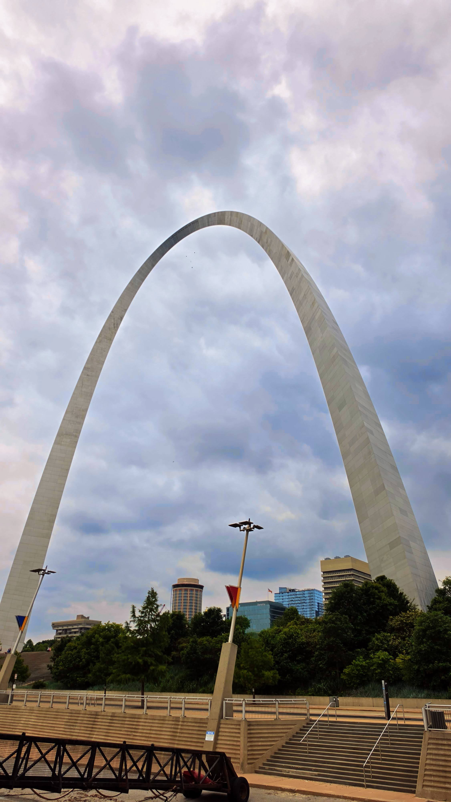
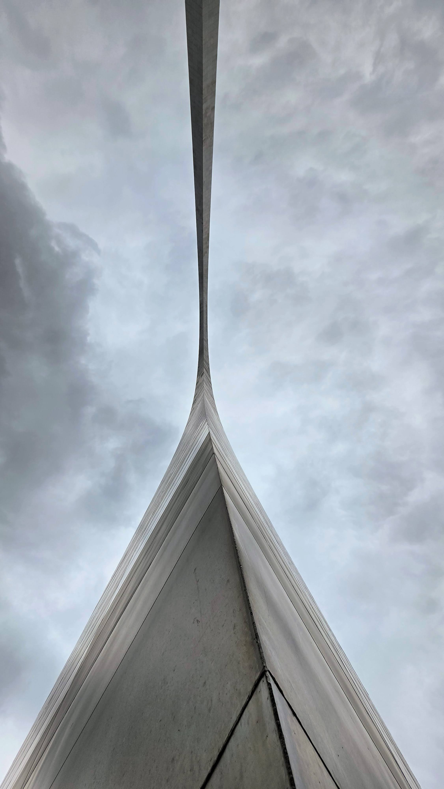
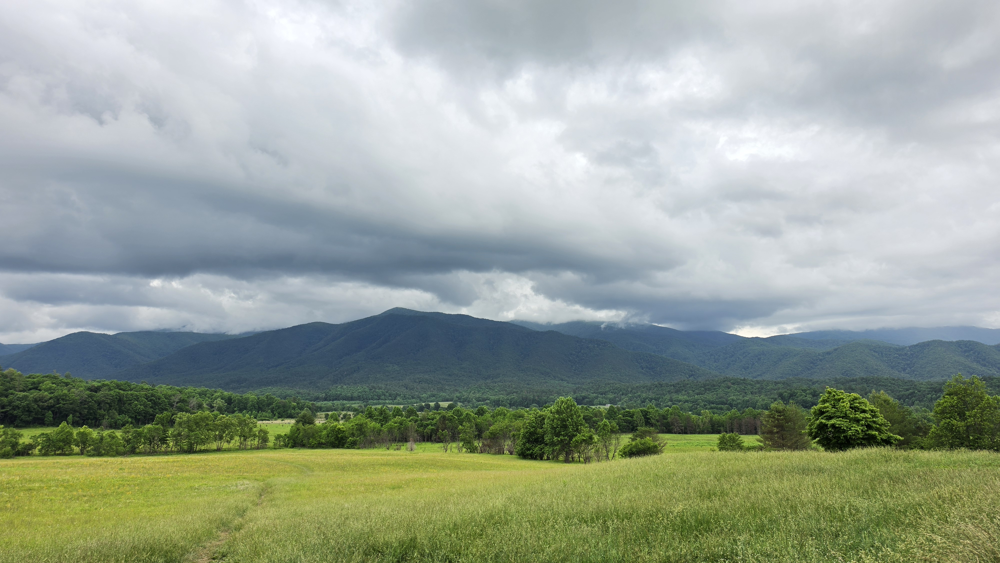
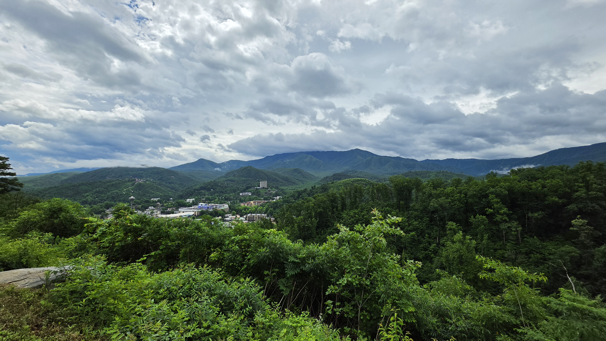
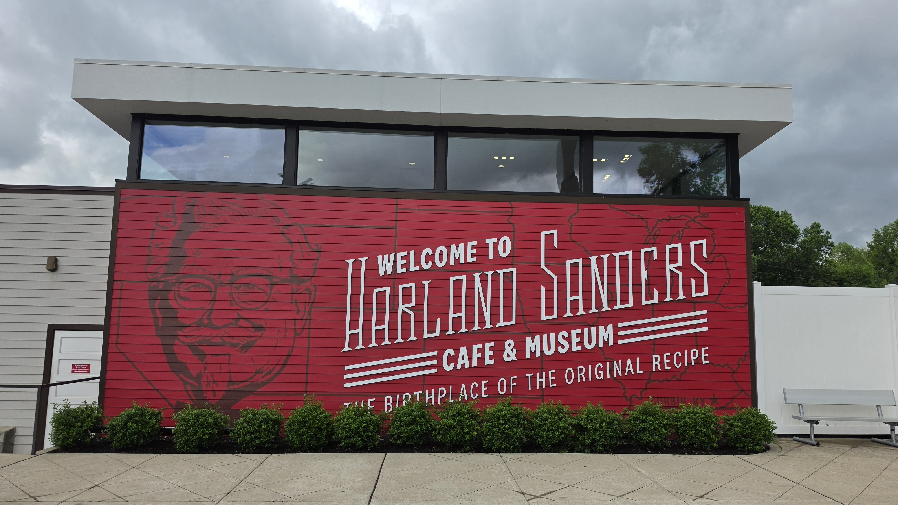
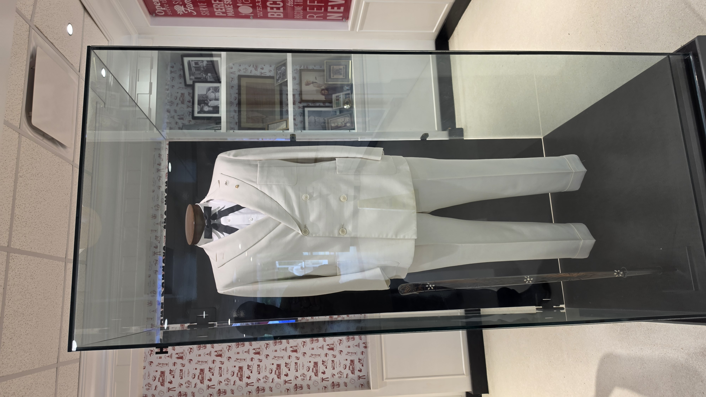

This Memorial Day weekend trip was a true cross-country expedition. Starting from the West Coast in California and making a stop in Salt Lake City before landing in the Midwest, this journey spanned all four major US mainland time zones. Across six days and over 1,000 miles of driving, we explored six different states—California, Utah, Missouri, Illinois, Kentucky, and Tennessee—uncovering the architectural, natural, and historical treasures tucked away in America's heartland.
St. Louis highlights: Architectural marvels
The journey began with a Friday night arrival at St. Louis Lambert International Airport. Saturday was dedicated to exploring the city's unique architectural landscape, where we spent the morning wandering through the museum and the sprawling grounds surrounding the nation's tallest man-made monument at the Gateway Arch National Park.


Into the labyrinth: Mammoth Cave National Park
Early Sunday morning, we departed St. Louis for a 290-mile drive southeast into Kentucky. The world's longest known cave system awaited us after a 4.5-hour drive through the rolling hills of Southern Illinois and Kentucky. After checking in at Cave City, we spent the late evening at the Mammoth Cave Visitor Center, exploring exhibits on the immense geological history of these ancient limestone corridors.

Misty peaks and valley loops: The Smoky Mountains
Monday was all about the peaks and wildlife of the Smokies. The atmosphere changed dramatically as we climbed into the ancient, mist-covered Appalachian Mountains. We spent time driving the 11-mile Cades Cove Loop, taking in the serene valley views and searching for local wildlife, before heading to the Kuwohi Observation Deck. Formerly known as Clingmans Dome, the 360-degree views from the deck offered a stunning perspective of the "Great Smokies." We ended the day exploring the vibrant and busy streets of Gatlinburg.



The return and Kentucky fried history
For the trip back, we took a slight detour to visit the site where one of the world's most famous culinary icons began in Corbin, Kentucky. We toured the original kitchen at the Harland Sanders Café and Museum, standing in the very spot where the "Secret Recipe" was born. The adventure concluded with a final stop back in Missouri; after completing the grand loop on Wednesday, we spent our final afternoon at the world-renowned St. Louis Zoo before finishing the final 415-mile leg and arriving home that afternoon.

